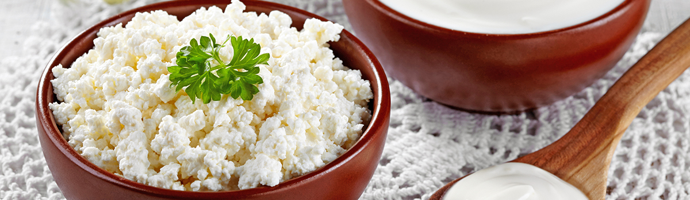

Вкусные и полезные продукты для улучшения здоровья
Соблюдение сбалансированной диеты, включающей в себя ряд необходимых для нормального функционирования жизненно важных систем продуктов, не должно вызывать никаких сложностей.
В данный момент существует огромное количество продуктов, которые не только обладают приятным вкусом, но и позволяют существенно улучшить состояние организма. В этой статье мы рассмотрим несколько самых вкусных и полезных продуктов для здоровья.
Ягоды и фрукты
Ягоды и фрукты считаются одними из самых полезных и вкусных натуральных продуктов для улучшения здоровья. Более того, данные продукты пользуются высокой популярностью, так как их можно употреблять в сыром виде, не используя термическую обработку, что позволяет с легкостью включать их в рацион.
Первым фруктом в списке наиболее полезных продуктов являются яблоки, содержащие много клетчатки, большой объем витамина C и множество антиоксидантов. Данный продукт рекомендуется употреблять между приемами пищи для снижения чувства голода.
Не менее значимым продуктом является авокадо, содержащий большой объем жиров и углеводов. Помимо этого, данный тропический фрукт также содержит витамин C, клетчатку и калий.
Третьим продуктом в этом списке являются бананы, которые считаются одним из самых богатых источников калия. Однако, помимо этого, в их составе также содержатся витамин B6 и клетчатка. Более того, банан считается одним из самых удобных для употребления продуктов.
Черника считается ягодой с самым высоким содержанием антиоксидантов.
Высоким уровнем популярности среди продуктов питания, улучшающих состояние здоровья, пользуются и апельсины, прославившиеся высоким содержанием витамина C, большим количеством антиоксидантов и приятным вкусом.
Полюбившаяся многим клубника считается не менее полезной. Эта ягода отличается низким содержанием углеводов и калорий, высоким уровнем витамина C, а также содержанием марганца и клетчатки.
Однако это далеко не все ягоды и фрукты способны оказывать положительное влияние на работу всех систем организма. В данный список также можно включить такие продукты как киви, вишня, виноград, грейпфрут, малина, слива, лимон, оливки, манго, груша и ананас.
Яйца
На протяжении многих лет яйца считаются одним из самых питательных продуктов в мире. Ранее ученые не рекомендовали включать их в рацион из-за высокого уровня холестерина. Однако проведенные в недавнем времени исследования продемонстрировали, что этот продукт является абсолютно безопасным для здоровья человека.
Мясо
Суждение о том, что большинство видов мяса являются вредными, ошибочно. Качественно приготовленное мясо считается одним из наиболее полезных продуктов в мире.
Так, самым богатым источником белка считается постная говядина, в которой, помимо этого, содержится активное железо, имеющее высокий уровень усвоения. Говядина рекомендуется многими диетологами тем лицам, которые используют для похудения низкоуглеводную диету.
Для снижения объемов жира в организме также часто рекомендуют использовать куриную грудку, отличающуюся низкой калорийностью, сравнительно невысоким содержанием жира и высоким содержанием белка. По заявлению ученых, куриная грудка считается одним из лучших источников питательных веществ.
Мясо ягненка является очень полезным продуктом, который рекомендуется многими диетологами из-за высокого содержания Омега-3 жирных кислот. Подобная особенность данного мяса обусловлена тем, что ягнята едят много травы, содержащей эти микроэлементы.
Семена и орехи
Несмотря на то, что орехи и семена имеют высокую калорийность и высокое содержание жира, их употребление позволяет избавиться от лишних килограммов. В этих продуктах содержится много полезных веществ, минералов и витаминов, необходимых организму человека для нормализации работы большинства жизненно важных систем организма.
Важно отметить, что орехи и семена также просто включить в свой рацион, как и фрукты с ягодами, так как они не требуют термической обработки перед употреблением.
Миндаль считается одним из самых популярных орехов. Он богат витамином E, клетчаткой, магнием и обладает антиоксидантными свойствами. По заявлению ученых, миндальные орехи позволяют ускорить метаболизм и процесс сжигания жира.
Семена чиа при этом считаются одними из самых питательных видов семян. В 28-ми граммах данного продукта содержится приблизительно 11 граммов клетчатки. При этом семена чиа также содержат кальций, марганец, магний и ряд других питательных веществ.
Не менее полезными считаются кокосы, содержащие клетчатку и триглицериды средней и длинной цепи.
Орехи макадамия пользуются большой популярностью в развитых странах, так как содержание в них Омега-6 жирных кислот в несколько раз выше, чем в других разновидностях орехов.
Грецкие орехи также считаются полезным продуктом, так как в их составе содержится клетчатка и ряд полезных минералов и витаминов.
Еще одним не менее полезным продуктом, который можно включить в данный список является арахис. Несмотря на то, что данный продукт имеет отношение к бобовым растениям, а не к орехам, многие люди из-за его структуры предпочитают относить его ко второму типу продуктов. Арахис содержит большое количество питательных веществ и антиоксидантов. Согласно заявлению исследований, включение в рацион данного продукта позволяет избавиться от лишних килограммов.

Овощи
Овощи считаются одним из основных источников калорий, обеспечивающих человеческий организм энергией. В связи с тем, что каждый из продуктов данного типа обладает своим уникальным составом и свойствами, специалисты рекомендуют каждый день употреблять несколько разных видов овощей. Рассмотрим каждый из продуктов данного вида более детально.
Спаржа относится к числу самых популярных овощей. Она отличается высоким содержанием витамина K и низкой калорийностью.
Не меньшей популярностью пользуются сладкий перец, который часто добавляют в салаты. Данный продукт имеет слегка сладковатый вкус и ценится за высокое содержание витамина C и антиоксидантов.
Капуста брокколи считается не менее полезной за счет высокого содержания ввитаминов C и K, клетчатки, и белка. Стоит отметить, что содержание белка в брокколи намного выше, чем в ряде других овощей. При этом данный вид капусты рекомендуется потреблять в вареном или в сыром виде.
Еще одним овощем, рекомендуемым специалистами для употребления, является морковь, содержащая витамин K, клетчатку, антиоксиданты и каратиноиды, улучшающие зрение.
Приятным на вкус и не менее полезным продуктом считается цветная капуста, которую принято добавлять в процессе приготовления различных салатов и блюд.
Одним из самых популярных овощей в мире является огурец. Данный продукт имеет низкую калорийность из-за того, что состоит преимущественно из воды. Но, несмотря на это, в его составе находится много питательных веществ, включая витамин K.
Самым полезным овощем для улучшения работы иммунной системы является чеснок, в составе которого находится сильнодействующее биологически активное соединение.
Капуста в последнее время набирает все большую популярность за счет того, что она придает приятный вкус и особый хруст многим салатам. Однако при этом данный продукт также имеет высокое содержание витаминов K и C, клетчатки и других питательных веществ, оказывающих положительное влияние на состояние здоровья.
Нередко для приготовления различных салатов используется и лук, содержащий ряд биологически активных веществ, укрепляющих иммунитет человека.
Высокой популярностью пользуются и помидоры, которые в большинстве случаев классифицируются как овощи, несмотря на то, что они являются фруктами. В составе помидоров находятся такие полезные вещества как калий и витамин C.
К числу других полезных овощей, которые также рекомендуется включать в рацион, специалисты относят:
- брюссельскую капусту;
- артишоки;
- баклажаны;
- салат;
- редис;
- кабачки;
- грибы.
Рыба и морепродукты
Для поддержания нормальной работы многих жизненно важных систем организма ученые рекомендуют включать в рацион рыбу и морепродукты. Это связано с тем, что именно эти продукты имеют высокое содержание Омега-3 жирных кислот, йода, и других микроэлементов, которых не хватает большинству людей.
Согласно исследовательским данным, лица, регулярно употребляющие морепродукты и жирную рыбу, имеют существенно меньший риск возникновения заболеваний сердечно-сосудистой системы и мозга, а также большую продолжительность жизни.
Лосось относится к числу жирных рыб и пользуется большой популярностью из-за своего прекрасного вкуса и большого количества питательных веществ. Добавление в рацион данной рыбы позволяет обеспечить организм белком, Омега-3 жирными кислотами, а также витамином D.
Не менее полезной рыбой, содержащей жирные аминокислоты, является сардина. Несмотря на свои небольшие размеры, данная рыба содержит большое количество питательных веществ, необходимых для нормализации работы мозга.
Форель является не менее популярной жирной рыбой, свойства которой сопоставимы лососем.
Однако стоит отметить, что в западных странах особой популярностью пользуется тунец, который отличается высоким содержанием белка и низкой калорийностью. Включение данной рыбы в рацион позволяет избавиться от лишних килограммов.
К числу полезных продуктов морского происхождения следует отнести моллюсков, таких как устрицы и осьминоги. Люди крайне редко включают подобные продукты в свой рацион. Однако мясо моллюсков содержит большое количество питательных веществ, из-за чего его часто сравнивают с говяжьей печенью и другими внутренними органами животных.
Еще одним интересным продуктом морского происхождения являются креветки, которые отличаются высоким содержанием белка, наличием селена и витамина B12. Данный продукт является диетическим и считается лучшим выбором для тех, кто хочет избавиться от лишних килограммов.
Зерновые культуры
На протяжении последних нескольких лет зерновые культуры теряют свою популярность. Это связано с популяризацией палео диеты, исключающей некоторые зерновые растения.
Однако исключение всех зерновых культур из рациона является ошибкой, так как большинство из них содержат необходимые для поддержания здоровья питательные вещества.
Первым продуктом в данном списке является коричневый рис, который активно используется в рационе каждого третьего человека на планете. Этот продукт содержит большое количество клетчатки, магний , а также витамин B1.
Еще одним продуктом для сохранения здоровья является овес, содержащий бета-глюканы, улучшающие работу иммунной системы и предотвращающие образование раковых клеток.
На протяжении последних нескольких лет среди людей, заботящихся о своем здоровье, существенно выросла популярность квиноа – зернового растения, содержащего белок, клетчатку и магний.
Хлеб
Очень много людей включают в свой рацион хлеб. Поэтому при переходе на сбалансированное питание им крайне сложно заменить данный продукт. Однако существует несколько решений этой проблемы:
- хлеб Иезекииля;
- домашний хлеб с низким содержанием углеводов.
Первая разновидность хлеба является одним из самых полезных продуктов данного вида. Это связно с тем, что хлеб Иезекииля изготавливается из проросших зерен пшеницы и нескольких разновидностей бобов.
Второй вариант является более полезным из-за того, что он изготавливается самостоятельно, что позволяет контролировать количество полезных веществ в продукте, его калорийность и наличие глютена.
Плоды бобовых растений
Плоды бобовых растений относятся к числу тех продуктов, которые были несправедливо осуждены диетологами в последние годы. Утверждение, что данные продукты содержат вещества, препятствующие процессу пищеварения и усвоения питательных веществ, является абсолютно верным. Однако при этом следует учитывать, что правильное приготовление плодов бобовых растений позволяет полностью исключить эти вредные вещества.
Иначе говоря, при правильном приготовлении плодов бобовых растений человек может получить источник большого количества белка и питательных веществ.
Наиболее популярным среди бобовых растений, позволяющих улучшить состояние здоровья, является стручковая фасоль, которая также известна под названием зеленая фасоль. Также как и обыкновенная зрелая фасоль она имеет высокое содержание клетчатки.
Еще одним популярным бобовым растением является чечевица, которая считается одним из основных источников растительного белка. Чечевица имеет уникальную структуру и очень приятный вкус.
Молочные продукты
У некоторых людей наблюдается непереносимость лактозы, что является препятствием для употребления молочных продуктов, являющихся богатым источником питательных веществ. В недавнее времени ученым удалось доказать, что лица, регулярно употребляющие молочные продукты, имеют существенно меньший риск развития диабета 2-го типа и ожирения.
Важно обратить внимание на то, что натуральное молоко, полученное от коров, питающихся свежей травой, является более полезным, чем некоторые биологически активные жирные кислоты, такие как CLA.
Одним из самых вкусных и полезных молочных продуктов является сыр. Содержание в одном кусочке этого продукта полезных веществ сопоставимо с одной чашкой молока. При этом стоит отметить, что молоко является богатым источником белка, кальция и полезных жиров.
Не менее полезным является йогурт. Этот продукт производится путем добавления в молоко живых бактерий, улучшающих всасывание питательных веществ и нормализующих микрофлору кишечника.

Масла и жиры
Еще сравнительно недавно многие диетологи вступали против употребления различного рода жиров. Но ученым удалось установить, что многие жиры и масла могут быть источниками полезных веществ, улучшающих здоровье человека.
Одним из продуктов, доказавших это, является сливочное масло, содержащее не только большое количество питательных веществ, но и витамин K2.
Вторым полезным продуктом из данного списка является кокосовое масло, содержащее полезные жирные кислоты, называемые триглицеридами. По заявлению исследователей, употребление масла кокоса может снизить риск развития и устранить некоторые симптомы болезни Альцгеймера. Более того, данная разновидность масла позволяет избавиться от лишнего жира.
Но самым полезным жиросодержащим продуктом в мире было признано оливковое масло, содержащее антиоксиданты и мононенасыщенные жиры, которые в сочетании между собой оказывают колоссальное положительное влияние на организм.
Корнеплоды
В большинстве случаев корнеплоды являются очень полезными продуктами, содержащими множество полезных веществ. Самым распространенным из них является картофель, содержащий калий и витамин C. Более того, при проведении исследований ученые отметили, что отварной картофель способен обеспечивать чувство насыщенности намного лучше ряда других отварных продуктов.
Еще одним полезным корнеплодом является батат, который также известен как сладкий картофель. В его составе содержится большое количество питательных веществ и антиоксидантов, обеспечивающих защиту клеток от разрушения.

Яблочный уксус
Среди ценителей здорового питания и сбалансированных диет яблочный уксус пользуется большой популярностью. Согласно исследовательским данным, этот продукт способен снижать уровень сахара в крови и ускорять процесс снижения веса.
Специалисты рекомендуют использовать данную разновидность уксуса для приготовления салатов.
Черный шоколад
Черный шоколад является не только самым вкусным продуктом из всех вышеперечисленных, но и самым полезным. В его составе содержатся магний и самые сильные антиоксиданты.